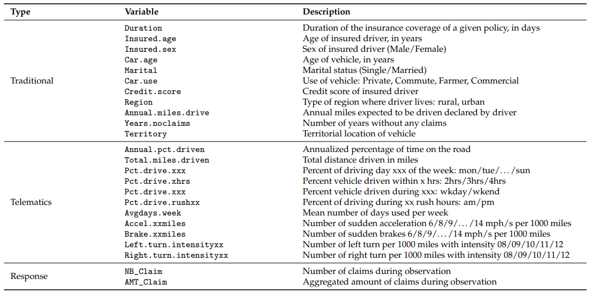

Telematics and Algorithmic Bias
Balancing Risk Assessment and Discrimination Mitigation in Insurance Pricing
Preface
The insurance industry often bases its decisions on statistical models, which, in a nutshell, must determine whether an insured person is risky or not. Therefore, carefully discriminating between risks is a question to establish the fairest possible premium. However, this practice may contravene principles prohibiting discrimination for sensitive variables such as age, gender, marital status, and ethnicity. Thus, the line between a fair actuarial classification and an unfair discrimination is thin and must be studied carefully.
To illustrate the delicate nature of some variables, we can, for example, refer to the practice of redlining in the United States to show the racial bias in such segmentation. Redlining consisted more precisely of delimiting residential neighborhoods according to their level of desirability by assigning them a color (green, blue, yellow, or red). The Federal Housing Administration (FHA) used this approach to determine eligibility to obtain insurance on a residence’s mortgage (Chibanda 2022). This approach was subsequently criticized for discriminating against ethnicity since the neighborhoods identified as the least desirable were mainly those where minorities resided. Redlining became illegal under the Fair Housing Act in 1968.
The use of the gender variable in pricing is also problematic in terms of fairness. In 1985, Montana was the first state in the United States to ban its use in the insurance industry following the efforts of feminist groups in the fight for unisex pricing (Reid 1985). All insurance coverage now has a segmentation that omits the use of gender. Several states, such as California, Hawaii, Massachusetts, and Michigan, have followed this initiative by excluding this variable in calculating automobile insurance premiums. The European Union also banned the use of gender in the estimation of premiums in 2012, and the calculation is now done through variables directly linked to the insured’s driving, such as the brand of the car and the mileage traveled (Lichtenstein 2022). Because of these changes, several players in the insurance industry, i.e., companies, regulators, and the scientific community, are developing new methodologies, making it possible to include the notion of fairness in models without sacrificing the quality of the latter (see, for example, (Lindholm et al. 2022) and (Embrechts and Wuthrich 2022)).
TELEcommunications and inforMATICS technology
Telematics technology is a blend of telecommunications and informatics that allows access to new sources of information through digitization and big data. This data is collected via an onboard diagnostics (OBD) device or a smartphone application. In the past, auto insurers primarily relied on static attributes related to the vehicle or the insured, which were indirectly related to accident risk. However, with the emergence of telematics technology, insurers can offer more customized premiums based on the insured’s driving habits, style, and volume, which can accurately determine their risk.
Usage-based insurance (UBI), in which the insured’s premium is estimated using their driving data, has become highly popular in the last decade. Traditionally, automobile insurers have relied mainly upon static attributes related to the vehicle or the insured, which are indirectly related to accident risk. With the rise of telematics technology, it is now feasible for insurers to offer a more customized premium that is more in line with an insured’s risk, which may now be determined by considering the insured’s volume, habits, and style of driving. One piece of GPS-collected information that is directly related to the risk insured is distance driven. The relevance of including this variable in ratemaking has been studied by (Ayuso, Guillen, and Perez-Marin 2014), (Ayuso, Guillen, and Marin 2016), (Boucher, Perez-Marin, and Santolino 2013), and (Lemaire, Park, and Wang 2016), among others.
Usage-based insurance has become highly popular in the last decade, allowing insurers to estimate the insured’s premium using their driving data. This is done through a pay-as-you-drive (PAYD) or pay-how-you-drive (PHYD) scheme (Tselentis, Yannis, and Vlahogianni 2016). PAYD focuses on driving habits, such as distance, time of day, or road type, while PHYD considers driving style, such as aggressive acceleration, sudden lane shifts, or speeding.
Insurers are increasingly promoting UBI due to its numerous benefits, such as allowing for more accurate pricing and a better customer experience. Consumers are also increasingly appreciating it. According to a survey conducted by Willis Towers Watson on \(1,005\) insurance consumers in the United States, \(80~\%\) of drivers are willing to share their recent driving information for a personalized insurance product. By accurately assessing an individual’s driving habits, insurers can more accurately determine their risk and offer a fair premium (e.g., (Lemaire, Park, and Wang 2016) or (Verbelen, Antonio, and Claeskens 2018)). Additionally, telematics technology positively impacts society by encouraging individuals to drive less and more safely, which helps reduce traffic congestion, make roads safer, limit greenhouse gas emissions, and make insurance more affordable, among other things.
UBI, or telematics data pricing, is likely the future standard in automobile insurance, and the market share of UBI products is growing. As more insurers adopt this technology, more consumers will benefit from lower premiums and safer roads.
Over the past fifteen years, a wealth of research has been conducted and published in scientific journals, spanning actuarial science, statistics, and transport. This extensive body of work has allowed us to categorize these contributions based on their success in achieving one or both of the following objectives:
- demonstrate that a model performs better when one or more elements from telematics are considered. These elements can range from the distance traveled (measured by an OBD or a smartphone application) to a detailed analysis of the position second by second.
- demonstrate that using one or more elements from telematics can replace a sensitive variable such as gender or age.
The models studied range from classic statistical approaches, such as generalized linear models (GLM), generalized additive models (GAM), and splines, to machine learning approaches, such as neural networks and boosting models.
In recent years, the distance traveled by a motorist has been the most studied measurement provided by a telematics device.
| Paper | Tools | Main Conclusion |
|---|---|---|
| (Boucher, Perez-Marin, and Santolino 2013) | Generalization of the offset Poisson regression model | The association between the number of kilometers and claim frequency is not properly captured by a linear relationship. |
| (Paefgen, Staake, and Thiesse 2013) | Classification algorithm | A novel way to aggregate telematics information into what they called an aggregate risk factor. |
| (Paefgen, Staake, and Fleisch 2014) | Multivariate logistic regression models | Non-linear relationship between mileage and accident risk. |
| (Lemaire, Park, and Wang 2016) | Probit and ordered probit regression models | Annual mileage is an extremely powerful predictor of the number of claims at-fault. |
| (Ayuso, Guillen, and Perez-Marin 2016) | Survival models | No gender discrimination is necessary if telematics provides enough information on driving habits. |
| (Boucher, Côte, and Guillen 2017) | GAM for cross-sectional data | Neither distance nor duration is proportional to claim frequency but that frequency tends rather to stabilize once a certain distance or duration has been reached. |
| (Verbelen, Antonio, and Claeskens 2018) | GAM and compositional predictors | Telematics variables increase the predictive power and render the use of gender as a discriminating rating variable redundant. |
| (Wuthrich 2017) | Tech. from pattern recognition and machine learning | Driving styles can be categorized and used for a regression analysis in car insurance pricing. |
| (Huang and Meng 2019) | Classification algorithm | Propose a way to bin continuous telematics variables to create a finite number of risk classes and increase interpretability. |
| (Guillen et al. 2019) | Zero-inflated Poisson model | Existence of a learning effect for large values of distance traveled; speed limit violations and driving in urban areas increase the expected number of accident claims. |
| (Ayuso, Guillen, and Nielsen 2019) | Count data regression models | Not only the distance traveled by the driver, but also driver habits, significantly influence the expected number of accidents and, hence, the cost of insurance coverage. |
| (Gao and Wuthrich 2019) | Convolutional neural network | Appropriately allocate individual car driving trips to selected drivers. |
| (Gao, Meng, and Wuthrich 2019) | K-means classification, PCA, neural network | Recommend the use of speed-acceleration heatmaps for car insurance pricing. |
| (Boucher and Turcotte 2020) | GAM for Location, Scale and Shape | The relationship between frequency and distance driven is approximately linear and that the apparent nonlinearity is due to residual heterogeneity incorrectly captured by GAMs |
| (So, Boucher, and Valdez 2021) | Multi-class adaptive boosting algorithm | The proposed algorithm outperforms other learning models designed to handle class imbalances. |
| (Guillen, Nielsen, and Perez-Marin 2021) | Poisson regression models | Hard-braking and acceleration events as well as smartphone use while driving increase the cost of insurance. |
| (Duval, Boucher, and Pigeon 2022) | Logistic regression with lasso penalty | Telematics data become redundant after about \(3\) months or \(4,000\) km of observation from a claim classification perspective. |
| (Gao, Wang, and Wuthrich 2022) | Boosting Poisson regression models | Both classical actuarial risk factors and telematics car driving data are necessary to receive the best predictive models. |
| (Duval, Boucher, and Pigeon 2023) | Anomaly detection algorithm | A routine and a peculiarity anomaly score for each trip can improve classification. |
The proposed research project will analyze the importance of various protected covariates such as:
- the territory residence of the insured,
- the age of the insured,
- the sex of the insured,
- the marital status of the insured,
- the credit score of the insured.
The project’s objective is to see how a driver’s telematic information can reduce the importance given to sensitive covariates such as the insured’s age and gender.
The work presented in this report can be used to extract the main conclusions presented below. It should be noted that these conclusions were obtained from the synthetic database and validated on the real database.
- Whether for ratemaking based on frequency or severity, the addition of telematics variables decreases the model’s prediction error and reduces the importance of protected variables.
- The credit score is the protected variable that maintains the highest level of utility after the addition of telematics variables.
- The distance traveled (the variable Miles.per.day in our analysis) is the telematics variable that seems to be the most important.
- The two families of approaches, parametric (GLM-Net) and non-parametric (XGBoost), lead to similar conclusions about the usefulness of protected variables after the addition of telematics variables.
Data used for the project
The data that could have been used in this project comes from a major Canadian insurer and is highly confidential. Instead, we use the synthetic database generated with the original data. Details can be found here:
B. So, J.-P. Boucher & E. Valdez (2021). Synthetic Dataset Generation of Driver Telematics. Risks, 9(4), 58.
The database can be accessed here. The synthetic dataset generated has 100,000 policies, including observations about driver’s claims experience and associated classical risk variables and telematics-related variables. The paper shows that the following variables are available in the synthetic database.

An analysis of the results obtained with synthetic data is compared to those obtained with the original data to ensure the accuracy of the conclusions. In this regard, it is noteworthy that, in order to achieve the closest match possible with the results obtained from the original data (used to generate the synthetic database), we determined that two covariates should not be utilized in the study: Annual.miles.driven and Annual.pct.driven. Finally, as the synthetic database does not allow the different coverages to be distinguished, it will not be possible to analyze them separately. However, the analysis and the code used could easily be reused to include this information if available.
In analyzing telematics data, we must be careful before jumping to general conclusions about the driving behavior of the whole portfolio. Indeed, policyholders who decided to place a telematics device on their car or to download an application on their phone that tracks all their car trips do not correspond to the general driver population. In our case, approximately \(10\%\) to \(15\%\) of the insurance company’s portfolio chose to use the telematics option for their car insurance. Typically, these insureds correspond to one of the two following profiles:
Technophile policyholders. They love new telematics technology and want detailed information about their driving habits. Summary driving data is indeed continuously available to policyholders via a website.
Young and/or bad drivers. To motivate policyholders to buy the telematics option, insurance companies often offer an initial discount, and the renewal discounts range from \(0\%\) to \(25\%\) depending on the driving experience. Because auto insurance in Ontario is expensive and often unaffordable for some drivers, all discounts are welcome for policyholders with high insurance premiums. As a result, an unusually high proportion of risky insureds use telematics devices or telematics apps.
Other
- The content in this project was generated with the assistance of artificial intelligence.
- Computer applications do not claim to be the most efficient or elegant. The goal is mainly to demonstrate how theory can be applied to actual data. If it is possible to optimize the code, one should not hesitate.
- Finally, it is worth noting that the report was written in Quarto (for details, see: https://quarto.org/docs/books), which means that all the codes used to create this report are available and directly replicable.